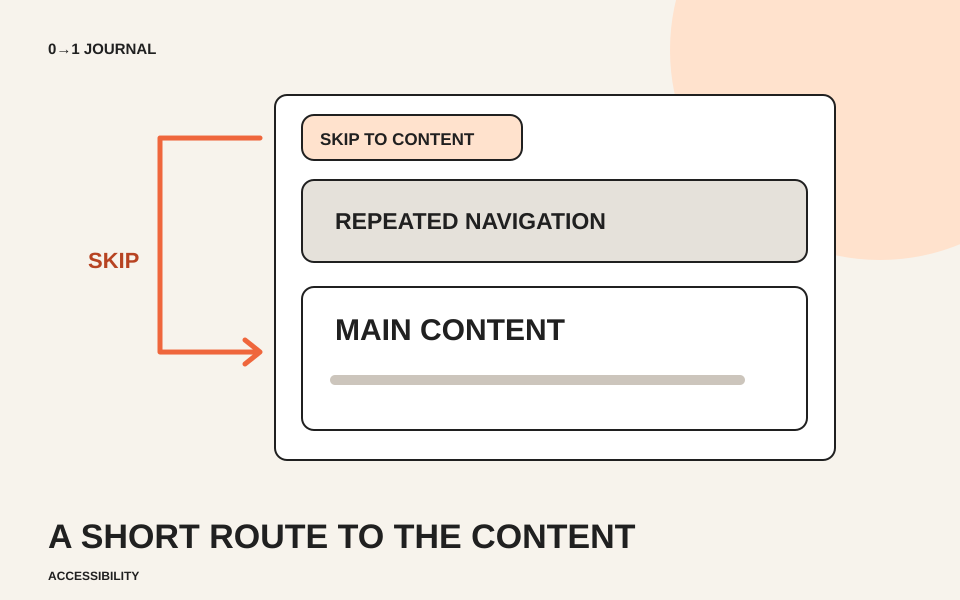

案内、展示、利用方法、交通、問い合わせ。共通メニューが長いサイトでは、次のページへ移るたびに同じリンクを順に通ることになります。架空の地域資料館の案内を題材に、キーボードで本文へ直接進む入口を作りましょう。
この入口をスキップリンクと呼びます。メニューを消す機能ではなく、読みたい本文へ進む経路を一つ追加します。この記事では常に見えるリンクから始め、位置の移動だけでなく、その後の操作まで確かめます。
先頭に「本文へ進む」という行き先を置く
スキップリンクは、共通メニューより前に置きます。「スキップ」だけでは何を飛ばすのか曖昧なので、今回は「本文へ進む」と書きます。ページ先頭からキーボード操作したとき、最初の操作対象として届く構成にします。
WAIのスキップリンクの手法G1では、繰り返す領域を飛ばして本文へフォーカスを移すことと、その確認手順が示されています。常に見える方式なら、入口の存在を探す必要も少なくなります。今回はまずこの形で練習します。
リンク先のidを、本文の開始位置に付ける
次は練習用HTMLのbody内へ置く断片です。完全なページを作る場合は、headのタイトルや文字コードも別途用意してください。仮のメニューも同じページ内の見出しへつなぎ、動作を確かめられる形にしています。
<a class="skip-link" href="#main-content">本文へ進む</a>
<header>
<nav aria-label="主な案内">
<a href="#exhibits">展示</a>
<a href="#visit">利用方法</a>
</nav>
</header>
<main id="main-content" tabindex="-1">
<h1>地域資料館の案内</h1>
<p><a href="#visit">来館前に利用方法を確認する</a></p>
<section id="exhibits">
<h2>展示</h2>
<p>地域の暮らしを紹介する常設展示です。</p>
</section>
<section id="visit">
<h2>利用方法</h2>
<p>開館日と入館方法は、来館前に確認してください。</p>
</section>
</main>
hrefの#main-contentと、本文側のidを一致させます。mainは本文領域を表します。tabindex="-1"は、通常のTab移動の対象を増やさず、フォーカスを受け取れる移動先にするための指定です。ページ内でidが重複しないことも確認してください。 指定の意味はMDNのtabindexの説明でも確認できます。
この断片を既存ページへ入れる際は、mainを重ねて増やすのではなく、既存の本文領域へidと必要な属性を設定します。リンクだけコピーしても、対応する移動先がなければ完成しません。
入口と到着先が分かる表示を付ける
練習用CSSは次のようにします。リンクの枠を付け、移動先にもフォーカスがあることを示します。既存のデザインに合わせる場合も、現在位置を示す線を理由なく消さないでください。
.skip-link {
display: inline-block;
margin: 12px;
padding: 8px 12px;
color: #111;
background: #fff;
border: 2px solid currentColor;
}
.skip-link:focus-visible,
#main-content:focus {
outline: 3px solid #174ea6;
outline-offset: 3px;
}
固定ヘッダーのあるページでは、本文の先頭がその下へ隠れていないかも見ます。リンクを押したらスクロールした、という観察だけでは、キーボードの操作対象が本文へ移ったとは限りません。表示とフォーカスを両方確かめます。
15分を目安に、次のTabがどこへ行くか調べる
ページ先頭からTabで「本文へ進む」を選び、Enterで実行します。本文の開始位置が見え、そこへフォーカスが移るか確認してください。続けてTabを押し、共通メニューへ戻らず、本文内の「来館前に利用方法を確認する」へ進むことを確かめます。
もし本文まで画面が動いたのにメニューから操作が続くなら、移動先のidやフォーカスの扱いを調べます。使用したブラウザーとOS、読み上げ環境の有無も記録し、確認していない環境を動作確認済みにはしません。
狭い幅で入口が欠ける問題は、スマートフォン表示の確認記事と合わせて点検できます。ページ全体の操作を見直すときは、アクセシビリティの無料レッスンも参照してください。
記載内容へのご質問や訂正のご連絡は、hello@junkbranding.comまでお願いします。